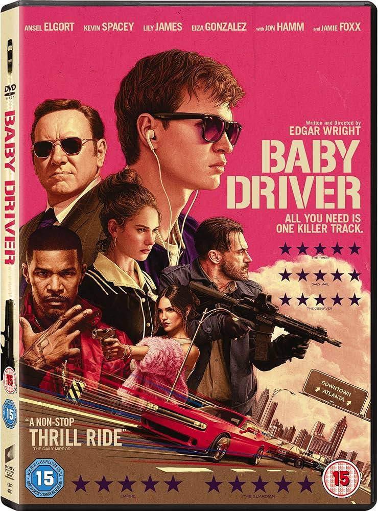

Baby driver
“Baby Driver” is an exhilarating action film directed by Edgar Wright. The story revolves around Baby, a young getaway driver living in Atlanta, Georgia. Here are the key points: Baby’s Unique Talent: Baby is partially hearing impaired but possesses an extraordinary skill—he can make any daring move while driving, whether in slow motion or at breakneck speed, as long as the right track is playing. His life revolves around music, which he uses to drown out the ringing in his ears caused by tinnitus. Debt and Crime: Baby works as the nearly silent getaway driver for a robbery syndicate managed by the cunning Doc. Doc organizes the crimes, hires the criminals, and places them in Baby’s car. Baby’s debt to Doc stems from stealing one of his cars. Rhythm and Music: The film ingeniously syncs action sequences with music. From the slamming of car doors to the squealing tires during intense car chases, everything moves in rhythm with the soundtrack. Even everyday activities seem like part of Baby’s personal soundtrack. Cast: Ansel Elgort portrays Baby, while Kevin Spacey plays the role of Doc. Other notable cast members include Jon Hamm, Eiza Gonzalez, Jon Bernthal, and Jamie Foxx. “Baby Driver” weaves music, cars, and characters into a thrilling and joyful cinematic experience—a must-watch for anyone seeking adrenaline-fueled entertainment
- Author :Edgar Wright
- Film evaluation :10/8
- Publication date :2017
- Movie stars :Jon Hamm (Paddy), Wilbur Fitzgerald (judge), Jon Bernthal (Griff), Jamie Foxx (Pats), Ansel Elgort (Baby), Eiza Gonzalez (Darling), Marisol Correa (Atlanta officer)
You can watch the movie her